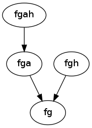

This page describes various conventions used in dolo.
There are several ways to represent a DSGE model. Here we list some of them:
This approach is taken in Dynare and in most perturbation softwares. The model is specified by a vectorial function
\(f(y_{t+1},y_t,y_{t-1},\epsilon_t) = 0\)
with the restriction that \(\epsilon_t\) and \(y_{t+1}\) cannot appear in the same equations. For this kind of models, the solver finds a solution \(g\) such that the law of motion of \((y_t)\) is given by: \(y_t = g \left( y_{t-1}, \epsilon_t \right)\)
We define several categories of models.

With these versions, the state-space is chosen by the user. A law of motion for the state-space must be specified (depending on the controls and on the shocks). And optimality conditions must be given to pin down all the controls. The model is specified by giving \(g\) and \(f\) such that:
\(s_t = g \left( s_{t-1}, x_{t-1}, \epsilon_t \right)\)
\(E_t \left[ f \left( s_t, x_t, s_{t+1}, x_{t+1} \right) \right]=0\)
The solution is a function \(\varphi\) such that \(x_t=\varphi(s_t)\).
In some cases, some variables can be directly expressed as a function of other variables. We call them auxiliary variables. Auxiliary variables are restricted to depend only on contemporaneous variables (controls or states). The model can be rewritten:
\(a_t = a\left(s_t, x_t\right)\)
\(s_t = g \left( s_{t-1}, x_{t-1}, a_{t-1}, \epsilon_t \right)\)
\(E_t \left[ f \left( s_t, x_t, a_t, s_{t+1}, x_{t+1}, a_{t+1} \right) \right]\)
Clearly, by substituting the variables a everywhere, this type of model can be seen as an fg model. Hence when some algorithm is applicable to an fg model, it can be also be applied to an fga model.
A sub-variant of this specification let the user choose equations to define expectations. This is useful for PEA approaches. The model is specified by giving \(g\), \(f\) and \(h\) such that:
\(s_t = g \left( s_{t-1}, x_{t-1}, \epsilon_t \right)\)
\(f \left( s_t, x_t, z_t \right)\)
\(z_t = E_t h \left( s_{t+1}, x_{t+1} \right)\)
Same remark as for fga model: is needed, fgh models can behave exactly as an fg model.
A sub-variant of this specification let the user choose equations to define expectations. This is useful for PEA approaches. The model is specified by giving \(g\), \(f\) and \(h\) such that:
\(a_t = a \left(s_t, x_t\right)\)
\(s_t = g \left( s_{t-1}, x_{t-1}, a_{t-1}, \epsilon_t \right)\)
\(f \left( s_t, x_t,a_t, z_t \right)\)
\(z_t = E_t h \left( s_{t+1}, x_{t+1} , a_{t+1} \right)\)
fgah models can behave exactly as an fg model, or an fga model
Note
When dolo is used to compile a model for matlab the convention is reversed: first dimension denotes the successive points. This is adapted to matlab’s storage order (Fortran order).